Bản án chế độ thực dân Pháp; Đường kách mệnh (1927); 3/2/1930 thành lập Đảng.
Pa-riMát-xcơ-vaQuảng ChâuHồng Kông
Hội nghị thành lập Đảng 2/1930 tại Hương Cảng (Trung Quốc)
Tên gọiNguyễn Ái Quốc
15ảnh tư liệu
1trích dẫn
5câu hỏi
Tổng quan thời kỳ
1921: tham gia sáng lập Hội Liên hiệp thuộc địa
1922: sáng lập báo Le Paria (Người cùng khổ)
Viết nhiều bài tố cáo chủ nghĩa thực dân
6/1923: đến Mát-xcơ-va, làm việc ở Quốc tế Cộng sản
10/1923: được bầu vào Ban Chấp hành Quốc tế Nông dân
1924: dự Đại hội V Quốc tế Cộng sản
11/1924: đến Quảng Châu (Trung Quốc)
6/1925: lập Hội Việt Nam Cách mạng Thanh niên
21/6/1925: ra báo Thanh niên
1928 – 1929: hoạt động trong Việt kiều ở Xiêm
Thời kỳ từ 1921 đến 1930Pa-ri → Mát-xcơ-va → Quảng Châu → Hồng KôngNguyễn Ái Quốc
1925: xuất bản Bản án chế độ thực dân Pháp
1927: xuất bản Đường kách mệnh
Các bài viết trên báo Người cùng khổ, Thanh niên
3/2/1930: chủ trì Hội nghị thành lập Đảng tại Cửu Long (Hương Cảng)
Thông qua Chánh cương vắn tắt, Sách lược vắn tắt
Cương lĩnh chính trị đầu tiên của Đảng
Giải phóng dân tộc theo con đường cách mạng vô sản
Cách mạng thuộc địa có thể thắng lợi trước cách mạng ở chính quốc
Cách mạng là sự nghiệp của quần chúng, do Đảng lãnh đạo
Các mốc sự kiện
tham gia sáng lập Hội Liên hiệp thuộc địa
sáng lập báo Le Paria (Người cùng khổ)
đến Mát-xcơ-va, làm việc ở Quốc tế Cộng sản
được bầu vào Ban Chấp hành Quốc tế Nông dân
dự Đại hội V Quốc tế Cộng sản
đến Quảng Châu (Trung Quốc)
xuất bản Bản án chế độ thực dân Pháp
lập Hội Việt Nam Cách mạng Thanh niên
ra báo Thanh niên
xuất bản Đường kách mệnh
hoạt động trong Việt kiều ở Xiêm
chủ trì Hội nghị thành lập Đảng tại Cửu Long (Hương Cảng)
Ảnh tư liệu
1
Hoạt động ở Pháp (1921 – 1923)
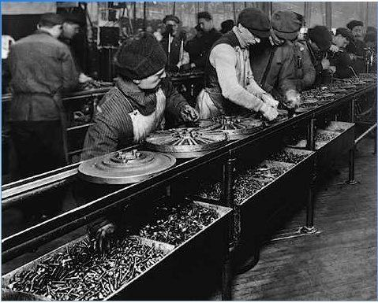
Người lao động ở chính quốcGiai cấp vô sản ở các nước tư bản cũng bị bóc lột nặng nề.
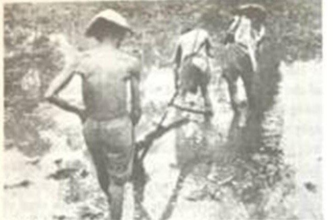
Người dân ở thuộc địaNgười nông dân phải kéo cày thay trâu – nỗi khổ của người dân mất nước dưới ách thực dân.
Hình ảnh “con đỉa hai vòi”: Người ví chủ nghĩa tư bản như con đỉa, một vòi bám vào giai cấp vô sản ở chính quốc, một vòi bám vào nhân dân thuộc địa. Muốn tiêu diệt nó phải đồng thời cắt cả hai vòi, tức là phải gắn cách mạng ở chính quốc với cách mạng ở thuộc địa. Thời gian này, Người tham gia sáng lập Hội Liên hiệp thuộc địa (1921) và ra báo Người cùng khổ (Le Paria, 1922).
2
Ở Liên Xô (1923 – 1924)
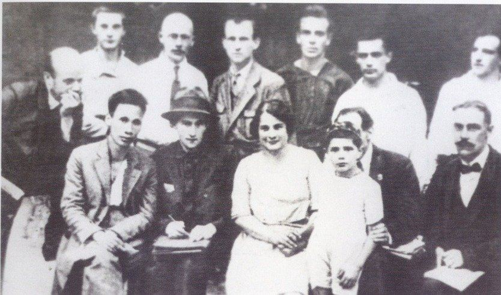
Nguyễn Ái Quốc với một số đại biểu dự Đại hội V Quốc tế Cộng sản (7/1924)Tại Đại hội, Người bảo vệ và phát triển quan điểm của Lênin về vấn đề dân tộc và thuộc địa.
Luận điểm sáng tạo: cách mạng giải phóng dân tộc ở thuộc địa có thể nổ ra và giành thắng lợi trước cách mạng vô sản ở chính quốc.
3
Ở Trung Quốc (1924 – 1927): chuẩn bị về tư tưởng, chính trị và tổ chức
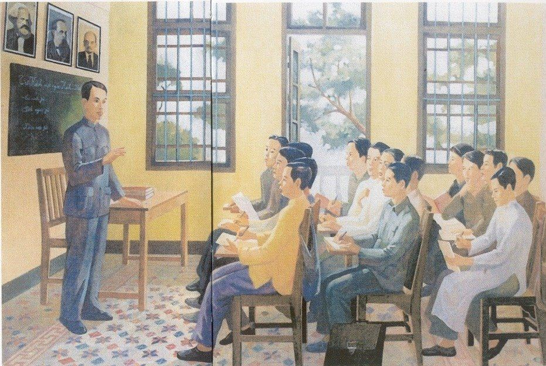
Lớp huấn luyện cán bộ tại Quảng ChâuNguyễn Ái Quốc trực tiếp giảng dạy, đào tạo cán bộ cho cách mạng Việt Nam (tranh minh họa).
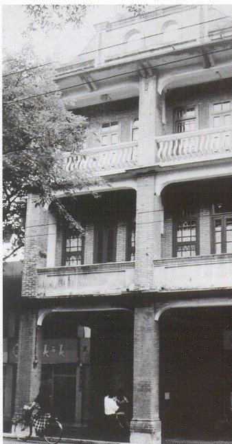
Ngôi nhà số 13/1 đường Văn Minh, Quảng ChâuTrụ sở Hội Việt Nam Cách mạng Thanh niên, nơi Người mở các lớp huấn luyện cán bộ (1925 – 1927); nay là số 248 – 250 đường Văn Minh.
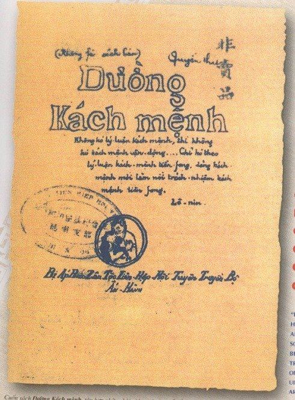
Tác phẩm Đường kách mệnh (1927)Tập hợp các bài giảng của Người tại lớp huấn luyện, trình bày những vấn đề cơ bản của cách mạng Việt Nam.
Hội Việt Nam Cách mạng Thanh niên (6/1925): Do Nguyễn Ái Quốc thành lập tại Quảng Châu, xuất bản báo Thanh niên – tổ chức chuẩn bị trực tiếp về tư tưởng, chính trị và tổ chức cho sự ra đời của Đảng.
Những đồng chí đứng đầu Tổng bộ đầu tiên của Hội Việt Nam Cách mạng Thanh niên
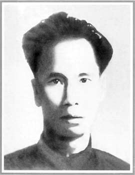
Nguyễn Ái Quốc1890 – 1969
Người sáng lập Hội.
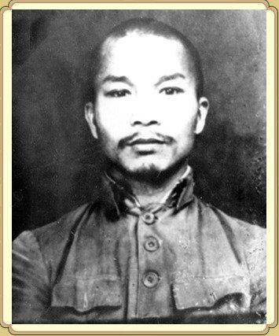
Lê Hồng Sơn1899 – 1933
Thành viên Tổng bộ.
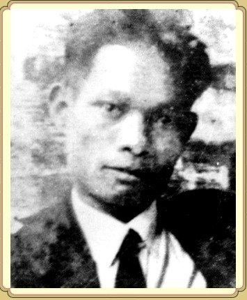
Hồ Tùng Mậu1896 – 1951
Thành viên Tổng bộ.
4
Ở Thái Lan (1928 – 1929)
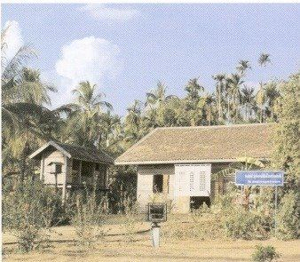
Nhà hợp tác ở Nakhon Phanom, Thái LanMột trong những nơi Nguyễn Ái Quốc ở và vận động phong trào Việt kiều yêu nước (1928 – 1929).
5
Thành lập Đảng Cộng sản Việt Nam (3/2/1930)
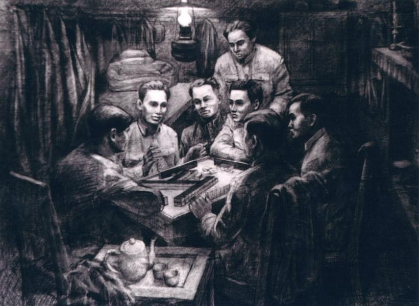
Hội nghị hợp nhất các tổ chức cộng sảnHọp tại Cửu Long (Hương Cảng, Trung Quốc) đầu năm 1930, do Nguyễn Ái Quốc chủ trì, thành lập Đảng Cộng sản Việt Nam (tranh minh họa).
Đại biểu các tổ chức cộng sản dự Hội nghị thành lập Đảng
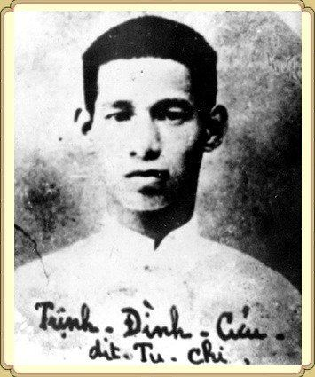
Trịnh Đình Cửu1906 – 1990
Đông Dương Cộng sản đảng.
Nguyễn Đức Cảnh1908 – 1932
Đông Dương Cộng sản đảng.
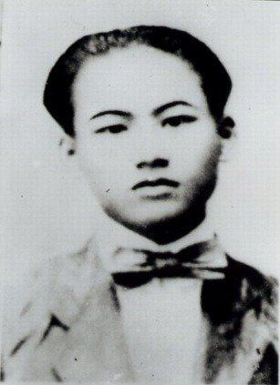
Châu Văn Liêm1902 – 1930
An Nam Cộng sản đảng.
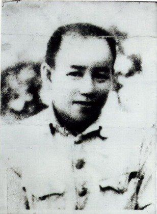
Nguyễn Thiệu1903 – 1989
An Nam Cộng sản đảng.
Cương lĩnh chính trị đầu tiên: Chính cương vắn tắt, Sách lược vắn tắt do Nguyễn Ái Quốc soạn thảo, được Hội nghị thông qua.
Phim tư liệu
Phim tư liệu đang được cập nhật
Trích dẫn, tác phẩm
Trích dẫn · Thời kỳ từ 1921 đến 1930
Bấm vào trích dẫn hoặc ảnh để phóng to
011927
“
Bây giờ học thuyết nhiều, chủ nghĩa nhiều, nhưng chủ nghĩa chân chính nhất, chắc chắn nhất, cách mệnh nhất là chủ nghĩa Lênin.